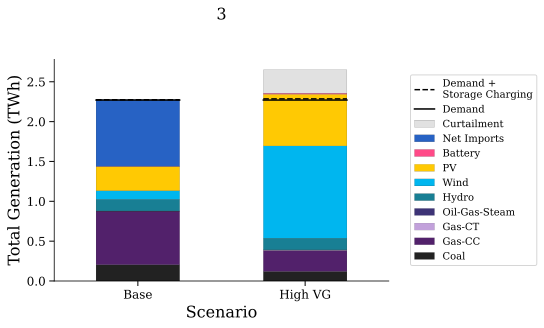

Tutorial: Creating plots and data-tables#
This is an introductory tutorial on creating plots and data-tables with Marmot. By the end of this tutorial, you will have completed the following:
Set up the user input files required for plotting.
Run the Plotter and created viewable figures and data-table outputs.
Note
This tutorial assumes you have already completed installation and the previous tutorial on formatting results, make sure you have Marmot formatted h5 files created before beginning.
Setting up the input files#
To let Marmot know where our formatted data is stored and which figures we would like to create, we need to setup our input files.
Marmot_user_defined_input#
As with the formatter the Marmot_user_defined_inputs: csv file also needs to be modified to run the plotter. This file is located in the Marmot/input_files directory.
For this tutorial we will focus on the following rows, for a more comprehensive look at this file see our How-to Guides and Input File References sections
The first two highlighted rows define where our input files are saved and where to save our outputs. The Model_Solutions_folder should point to the root of our scenario name folders. For our data this is the hourly folder we setup in the previous tutorial, Tutorial: Formatting PLEXOS modelling results.
The Marmot_Solutions_folder allows you to save the outputs from the formatter and plotter in a different location to the input files. For this tutorial we will save our outputs in the same location as our inputs.
Scenarios identifies the scenarios we want to plot and compare. This corresponds to the scenario name folders within the the hourly folder, Base DA and High VG DA. Multiple scenarios should be comma separated.
AGG_BY determines the geographic area by which to aggregate when creating plots. By default, PLEXOS has two aggregations, region and zone. For this tutorial we will aggregate by zone. for a more detailed look at this property and how to create custom aggregations see our How-to Guides and the Region Mapping: csv file reference.
Setup the 4 rows using your inputs, also set any unused optional values to blank entries. They should look something like this when you’re finished:
Marmot_plot_select#
Next we will setup the Marmot_plot_select: csv file. This file is also located in the Marmot/input_files directory. This file specifies which figures we want to create with Marmot.
When you open the file, you will see the following structure:
The file has 14 columns, column A is the name of the figures we can create and the names they will be given once saved. Column B accepts TRUE/FALSE values and is used to determine whether Marmot should create the specified figure. For a more comprehensive look at this file see our How-to Guides and Input File References sections
Set all the values in column B to False except the following:
Stacked_Gen_Peak_Demand
Total_Generation
Total_Installed_Capacity
Marmot will now know to create these figures.
Running the Plotter#
With the input files setup, we are now ready to create our selected figures.
Open a terminal that is setup with Python and conda such as Anaconda prompt and change directory
to the Marmot\bin repository folder using the cd command like the following example:
cd E:\Marmot\bin
Next activate the marmot-env:
conda activate marmot-env10
Finally initiate the plotter using the following command:
python run_marmot_plotter.pt
Marmot will now begin creating your figures and will print messages to the terminal. Once completed the figures will be located in a new folder called Figures_Output within the hourly data folder. Figures will be organized into sub-folders named by the selected area aggregation and the figure type.
Open the region_total_generation sub-folder and you will see the following files.
A figure and its data-table were created for each region within the database. By default, figures are saved as an svg format and data-tables as csv’s. Below is the total generation figure for region 3.
Congratulations, you have successfully created figures with Marmot.